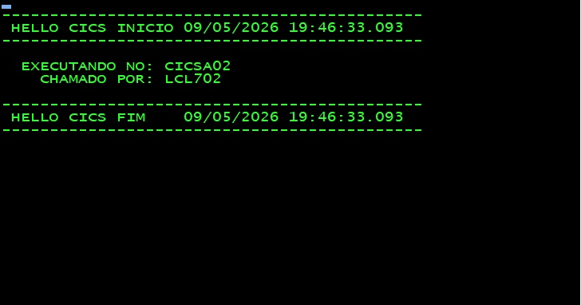
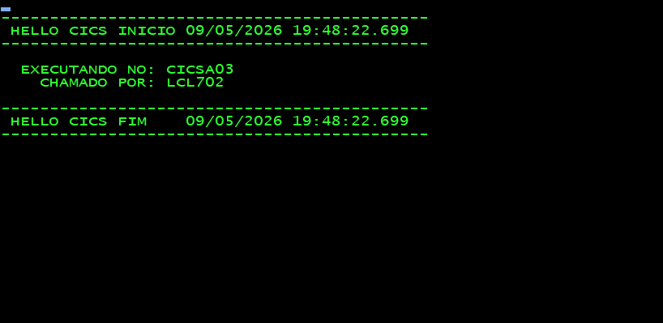

Ambiente: CICS Transaction Server 4.1 · Autor: Diego Eduardo Moysés
Região CICS que recebe as requisições dos terminais e as roteia para os AORs. Não executa programas de aplicação nem acessa banco de dados diretamente.
Região CICS que executa os programas de aplicação, contém as transações e gerencia as conexões com DB2 e outros recursos.
Multi-Region Operation é o mecanismo de comunicação entre regiões CICS rodando no mesmo z/OS. Utiliza o IRC (Inter-Region Communication) e o protocolo LU61 para troca de dados entre as regiões.
No CICS TOR CICST01, vamos definir Connection e Session para os AORs CICSA02 e CICSA03, além da transação TEST.
CEDA DEFINE CONNECTION(CSA2) GROUP(GTOR) ACCESSMETHOD(IRC) NETNAME(CICSA02)
OBJECT CHARACTERISTICS
CEDA View CONnection( CSA2 )
CONnection : CSA2
Group : GTOR
DEScription :
CONNECTION IDENTIFIERS
Netname : CICSA02
INDsys :
REMOTE ATTRIBUTES
REMOTESYSTem :
REMOTEName :
REMOTESYSNet :
CONNECTION PROPERTIES
ACcessmethod : IRc
PRotocol :
COnntype :
SInglesess : No
DAtastream : User
RECordformat : U
CEDA DEFINE SESSIONS(CSA2) GROUP(GTOR) CONNECTION(CSA2) PROTOCOL(LU61) SENDCOUNT(005) RECEIVECount(005)
OBJECT CHARACTERISTICS
CEDA View Sessions( CSA2 )
Sessions : CSA2
Group : GTOR
DEScription :
SESSION IDENTIFIERS
COnnection : CSA2
SESSName :
NETnameq :
MOdename :
SESSION PROPERTIES
Protocol : Lu61
MAximum : 000 , 000
RECEIVEPfx : <
RECEIVECount : 005
SENDPfx : >
SENDCount : 005
SENDSize : 04096
RECEIVESize : 04096
CEDA DEFINE CONNECTION(CSA3) GROUP(GTOR) ACCESSMETHOD(IRC) NETNAME(CICSA03)
OBJECT CHARACTERISTICS
CEDA View CONnection( CSA3 )
CONnection : CSA3
Group : GTOR
DEScription :
CONNECTION IDENTIFIERS
Netname : CICSA03
INDsys :
REMOTE ATTRIBUTES
REMOTESYSTem :
REMOTEName :
REMOTESYSNet :
CONNECTION PROPERTIES
ACcessmethod : IRc
PRotocol :
COnntype :
SInglesess : No
DAtastream : User
RECordformat : U
CEDA DEFINE SESSIONS(CSA3) GROUP(GTOR) CONNECTION(CSA3) PROTOCOL(LU61) SENDCOUNT(005) RECEIVECount(005)
OBJECT CHARACTERISTICS
CEDA View Sessions( CSA3 )
Sessions : CSA3
Group : GTOR
DEScription :
SESSION IDENTIFIERS
COnnection : CSA3
SESSName :
NETnameq :
MOdename :
SESSION PROPERTIES
Protocol : Lu61
MAximum : 000 , 000
RECEIVEPfx : <
RECEIVECount : 005
SENDPfx : >
SENDCount : 005
SENDSize : 04096
RECEIVESize : 04096
CEDA DEFINE TRANSACTION(TEST) GROUP(GTOR) PROGRAM(DFHMIRS) DYNAMIC(YES) REMOTESystem(CSA2) REMOTEName(TEST)
OBJECT CHARACTERISTICS
CEDA View TRANSaction( TEST )
TRANSaction : TEST
Group : GTOR
DEScription :
PROGram : DFHMIRS
REMOTE ATTRIBUTES
DYnamic : Yes
ROutable : Yes
REMOTESystem : CSA2
REMOTEName : TEST
Nos CICS AORs, definimos Connection e Session para o TOR CICST01, a transação TEST e o Programa HELLOCIC. Pode-se utilizar os mesmos recursos para ambas as regiões AOR desde que o arquivo CSD seja compartilhado. Caso contrário, será necessário criar os recursos para cada CICS AOR individualmente.
CEDA DEFINE CONNECTION(CST1) GROUP(GAOR) ACCESSMETHOD(IRC) NETNAME(CICST01)
OBJECT CHARACTERISTICS
CEDA View CONnection( CST1 )
CONnection : CST1
Group : GAOR
DEScription :
CONNECTION IDENTIFIERS
Netname : CICST01
INDsys :
REMOTE ATTRIBUTES
REMOTESYSTem :
REMOTEName :
REMOTESYSNet :
CONNECTION PROPERTIES
ACcessmethod : IRc
CEDA DEFINE SESSIONS(CST1) GROUP(GAOR) CONNECTION(CST1) PROTOCOL(LU61) SENDCOUNT(005) RECEIVECount(005)
OBJECT CHARACTERISTICS
CEDA View Sessions( CST1 )
Sessions : CST1
Group : GAOR
DEScription :
SESSION IDENTIFIERS
COnnection : CST1
SESSName :
NETnameq :
MOdename :
SESSION PROPERTIES
Protocol : Lu61
MAximum : 000 , 000
RECEIVEPfx : <
RECEIVECount : 005
SENDPfx : >
SENDCount : 005
SENDSize : 04096
RECEIVESize : 04096
CEDA DEFINE TRANSACTION(TEST) GROUP(GAOR) PROGRAM(HELLOCIC)
OBJECT CHARACTERISTICS
CEDA View TRANSaction( TEST )
TRANSaction : TEST
Group : GAOR
DEScription :
PROGram : HELLOCIC
CEDA DEFINE PROGRAM(HELLOCIC) GROUP(GAOR) LANGUAGE(COBOL)
OBJECT CHARACTERISTICS
CEDA View PROGram( HELLOCIC )
PROGram : HELLOCIC
Group : GAOR
DEScription :
Language : CObol
Realize o INSTALL dos recursos em todos os CICS, manualmente ou com a reciclagem das regiões caso esteja utilizando autoinstall por lista definida na tabela SIT de cada CICS.
Após a instalação, abra o IRC e adquira as conexões:
CEMT SET IRC OPEN CEMT SET CONNECTION(CSA2) ACQUIRED CEMT SET CONNECTION(CSA3) ACQUIRED
I CONN
STATUS: RESULTS - OVERTYPE TO MODIFY
Con(CSA2) Net(CICSA02 ) Ins Acq Irc Nrs
Con(CSA3) Net(CICSA03 ) Ins Acq Irc Nrs
---
I TRANS(TEST)
STATUS: RESULTS - OVERTYPE TO MODIFY
Tra(TEST) Pri( 001 ) Pro(DFHMIRS ) Tcl( DFHTCL00 ) Ena Dyn
Rou Prf(DFHCICST) Uda Bel Iso Trp(DFHCICSS) Bac Wai
I CONN
STATUS: RESULTS - OVERTYPE TO MODIFY
Con(CST1) Net(CICST01 ) Ins Acq Irc Nrs
---
I TRANS(TEST)
STATUS: RESULTS - OVERTYPE TO MODIFY
Tra(TEST) Pri( 001 ) Pro(HELLOCIC) Tcl( DFHTCL00 ) Ena Sta
Prf(DFHCICST) Uda Bel Iso Bac Wai
---
I PROG(HELLOCIC)
STATUS: RESULTS - OVERTYPE TO MODIFY
Prog(HELLOCIC) Leng(0000006304) Cob Pro Ena Pri Ced
Res(000) Use(0000000005) Bel Uex Ful Qua Cic Len
✅ Sinais de Sucesso: Conexões com statusIns Acq Irc, transaçãoTESTEnablede programaHELLOCICEnabledcom contador de uso.
Com tudo configurado e os CICS comunicando, execute a transação TEST no terminal do TOR CICST01.
O fonte completo pode ser acessado aqui HELLOCIC.
IDENTIFICATION DIVISION.
PROGRAM-ID. HELLOCIC.
*
DATA DIVISION.
WORKING-STORAGE SECTION.
*
01 WS-APPLID-AOR PIC X(08) VALUE SPACES.
01 WS-NETNAME-TOR PIC X(08) VALUE SPACES.
01 WS-MSG-OUT PIC X(80) VALUE SPACES.
01 WS-MSG-LEN PIC S9(04) COMP VALUE 80.
01 WS-LINHA1 PIC X(40) VALUE SPACES.
01 WS-LINHA2 PIC X(40) VALUE SPACES.
01 WS-LINHA3 PIC X(40) VALUE SPACES.
01 WS-TAM-L1 PIC S9(04) COMP VALUE 0.
01 WS-TAM-L2 PIC S9(04) COMP VALUE 0.
01 WS-TAM-L3 PIC S9(04) COMP VALUE 0.
01 WS-CRLF PIC X(01) VALUE X'0D'.
*
PROCEDURE DIVISION.
MAIN-PARA.
EXEC CICS ASSIGN
APPLID(WS-APPLID-AOR)
END-EXEC.
*
EXEC CICS ASSIGN
NETNAME(WS-NETNAME-TOR)
END-EXEC.
Executando a transação TEST configurada com REMOTESystem(CSA2), que é o SYSID doCICSA02.

Para rotear para o AOR CICSA03, altere o REMOTESystem para CSA3 e reinstale o recurso.
CEDA ALTER TRANSACTION(TEST) GROUP(GTOR) REMOTESystem(CSA3) CEDA INSTALL GROUP(GTOR)
OBJECT CHARACTERISTICS
CEDA View TRANSaction( TEST )
TRANSaction : TEST
Group : GTOR
DEScription :
PROGram : DFHMIRS
REMOTE ATTRIBUTES
DYnamic : Yes
ROutable : Yes
REMOTESystem : CSA3
REMOTEName : TEST
Executando a transação TEST novamente. Agora ela será processada no CICSA03.

🎯 Conclusão: A comunicação TOR/AOR via MRO está configurada e funcional. O roteamento de transações entre os AORs pode ser controlado através do parâmetro REMOTESystem na definição da transação no TOR.